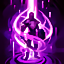
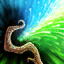
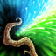
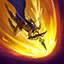
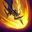

Tier list des meilleurs champions à jouer au top
Qu'est-ce que le top?
Ce qu’il faut savoir avant toute chose, c’est que la toplane se situe tout en haut de la Faille de l’invocateur (carte du jeu). Il s’agit donc d’une voie assez excentrée qui a bien souvent peu d’impact en début de partie. Cela explique la présence de champions tanks ou combattants.
Les sorts d'invocateur sur la toplane
La majorité des champions ont besoin du Saut éclair (Flash) sur la toplane ; il est très rare de voir un toplaner jouer sans ce sort d’invocateur. Quant au second, il varie de la Téléportation à l’Embrasement en passant par le Fantôme. Cela dépendra du champion joué mais la TP reste la plus viable afin d’aider ses alliés.
+
ou
ou
Les particularités de la toplane
La toplane est une voie très longue ce qui explique que les sbires mettent du temps à arriver. En plus, elle dispose d’une alcôve (comme en botlane) permettant de temporiser un gank, comme montré dans la vidéo à 1 minute et 45 secondes. Enfin, comme vous le savez sûrement, la toplane est une voie en 1 contre 1.
Les champions du moment à privilégier!
Garen


Garen est un guerrier fier et noble qui fait partie du Détachement hardi. Héritier des Crownguard, la famille chargée de défendre Demacia et ses idéaux, il est apprécié par ses compatriotes et respecté par ses ennemis. Équipé d'une armure résistante à la magie et d'une épée large, Garen affronte sans faillir les mages et les sorciers dans un véritable tourbillon d'acier.
Nasus


Nasus est un imposant Transfiguré à tête de chacal, une figure héroïque que les peuples du désert considéraient comme un demi-dieu aux temps anciens de Shurima. Il était très intelligent ; son savoir encyclopédique et son extraordinaire sens stratégique guidèrent l'antique empire de Shurima vers la grandeur pendant des siècles. Après la chute de l'empire, il s'imposa un exil et devint peu à peu une légende. Maintenant que l'ancienne cité de Shurima renaît de ses cendres, il est de retour, déterminé à empêcher qu'elle ne chute de nouveau.
Lulu
 



Magicienne yordle, Lulu aime conjurer des illusions oniriques et de drôles de créatures en explorant Runeterra avec Pix, sa fée de compagnie. Lulu forge la réalité selon ses désirs, modifiant à sa guise la structure du monde et ce qu'elle considère comme les contraintes physiques d'un univers sans saveur. Beaucoup pensent que sa magie n'est pas naturelle, pour ne pas dire dangereuse, mais elle estime qu'un peu d'enchantement ne peut faire de mal à personne.
Darius


Il n'est pas de plus grand symbole de la puissance de Noxus que Darius, le commandant le plus craint et le plus endurci de la nation. D'origine modeste, celui qui s'est élevé jusqu'à devenir la Main de Noxus pourfend aujourd'hui les ennemis de l'empire, dont certains sont eux-mêmes des Noxiens. Il ne doute jamais de la justesse de sa cause et ne montre pas la moindre hésitation lorsque sa hache est levée. Ceux qui s'opposent au chef de la Légion Trifarian ne doivent s'attendre à aucune pitié.
Pantheon

 

Autrefois l'hôte réticent de la Manifestation de la Guerre, Atreus a survécu à la mort de la puissance céleste qui l'habitait, refusant de succomber au coup qui arracha les étoiles mêmes des cieux. Avec le temps, il apprit à accepter le pouvoir de sa mortalité, et la résistance bornée qui y est associée. Atreus s'oppose désormais aux entités divines en tant que Pantheon, ressuscité parmi les mortels, et manie les armes de la Manifestation animées par sa volonté inébranlable sur le champ de bataille.